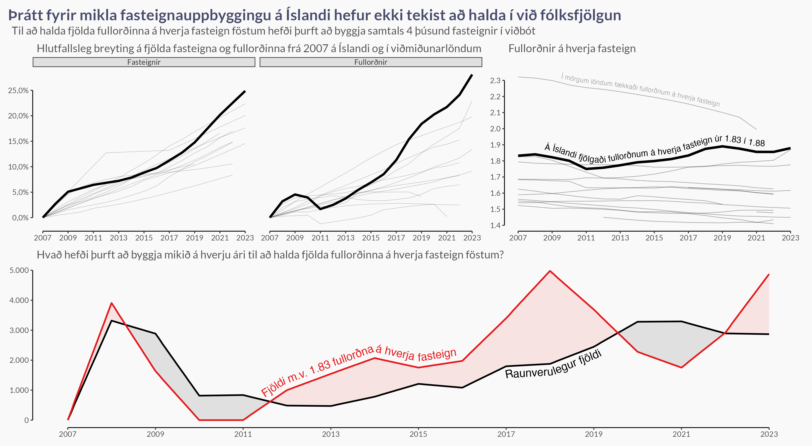
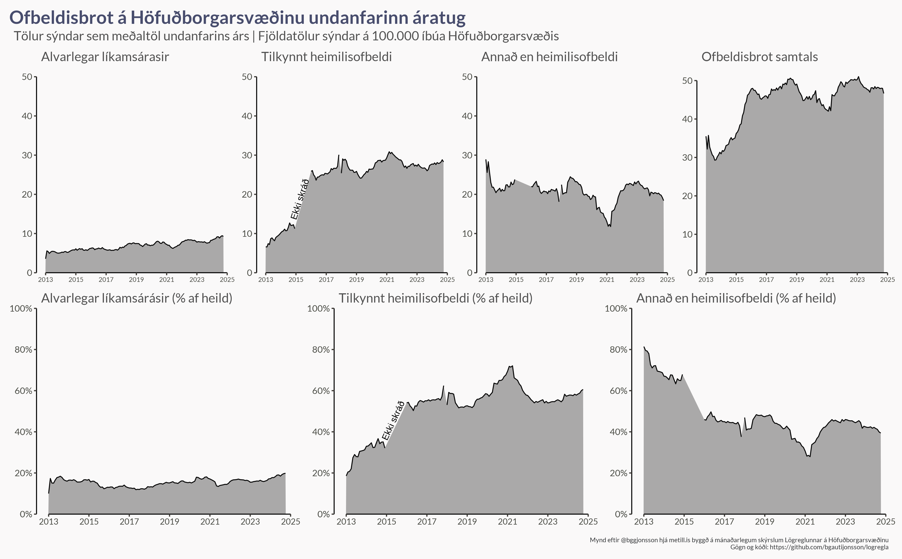
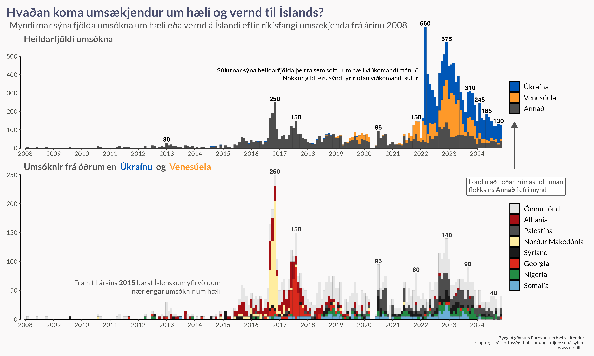
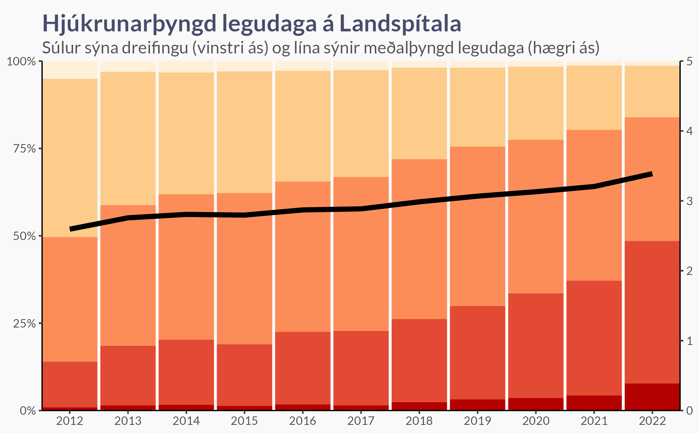
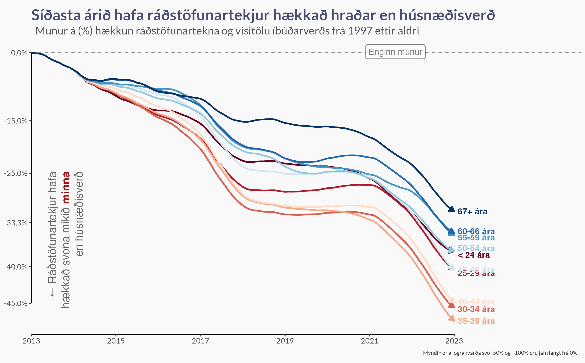
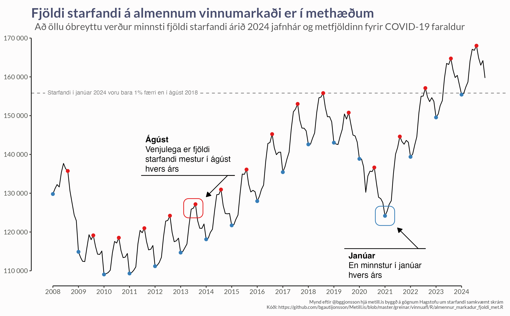
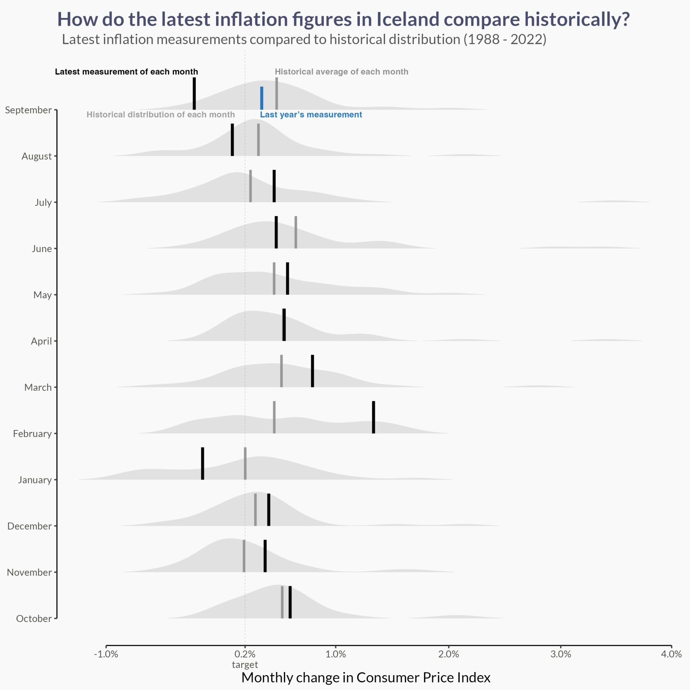
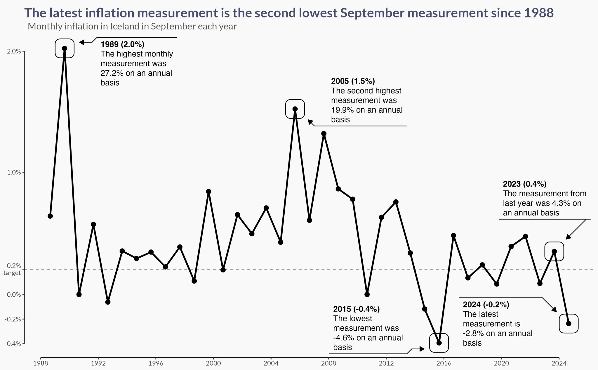

Overview
I am a PhD student of statistics at the University of Iceland, researching spatially distributed extreme rainfall and methods for modeling data-level dependence using copulas. Prior to this, I have worked extensively with Bayesian hierarchical models, having applied them to forecasting parliamentary elections and age-dependent mortality as well as the modeling of COVID-19 disease spread in Iceland during the pandemic. I also manage metill.is, an Icelandic website where I use official data to inform the discourse on current matters.
Contact
Brynjólfur Gauti Guðrúnar Jónsson
PhD Student in Statistics
University of Iceland
Email: brynjolfur@hi.is
Portfolio
Housing
Housing and Population Growth
This visualization examines the relationship between housing availability and adult population growth in Iceland and other similar countries. It provides insights into how the number of adults per housing unit has evolved over time and how housing construction compares to population growth.
What You Can Explore
- Adults per Housing Unit (Top row) – This metric indicates how many adults, on average, share a single housing unit. A rising number may suggest increasing housing pressure, while a decline could indicate improved housing availability.
- Percentage Increase: Adults vs. Housing (Bottom-left) – This side-by-side comparison highlights whether housing construction has kept pace with population growth. If the adult population grows faster than available housing, affordability and availability may be affected.
- Evolution Over Time (Bottom-right) – This trend view illustrates how the ratio of adults per housing unit has changed, offering historical context on whether the housing market is tightening or easing.
The data is presented in Icelandic, but the patterns and trends are universal. If you have any questions or would like additional insights, feel free to reach out!
Some translations
- Fullorðnir á hverja fasteign í síðustu mælingu: Adults per housing unit in most recent measurement
- Fasteignir: Units of housing
- Fullorðnir: Adults
A shoort loop is shown below, but the figure can be found here.
Housing “Debt” Compared to 2007
In the year 2007 there were 1.83 adults per unit of housing in Iceland, but in the year 2023 this ratio had increased to 1.88. In the figure below I show
- Percentage Increase: Housing vs. Adults (Top-left) - Icelandic trend shown in black, but other similar countries shown in muted grey.
- *Evolution Over Time (Top-right)** – This trend view illustrates how the ratio of adults per housing unit has changed, offering historical context on whether the housing market is tightening or easing.
- Real Housing Development vs. Needed - A comparison of the real amount of housing developed (black) and how much would have been needed to maintain the same amount of adults per unit of housing.
The number of adults per housing in Iceland differs from the above figure because of different definitions of adulthood and different data sources.

Spatial Comparison of Housing Prices
During the COVID-19 pandemic, the Icelandic central bank (and many others) lowered its rates drastically with the purpose of stimulating the economy. One of the unintended side effects was a large and fast increase in housing prices as people had easier access to better loans. In the below video I show a map where I used the {leaflet} and {leafsync} packages to show simultaneously
- The price per square meter in 2019 (Top-left) - What was the mean price per square meter for each area of the Capitol Region in 2019?
- The price per square meter in 2023 (Top-right) - The same but now for 2023
- The percentage change from 2019 to 2023 (Bottom-left)
- The absolute change from 2019 to 2023 (Bottom-right)
Population and Immigration
Immigrant in Iceland by Country of Origin
The below video shows interactions of a map I made using the {ggplot2} and {ggiraph} packages in R. The map shows the number of immigrants in Iceland by country of origin, roughly grouped together in a shared data id key.
Labour Force Participation in European Countries
The video below shows labour force participiation (% of 20-64 y.o. working or looking for work) and employment (% of 20-64 y.o. working). The video shows these two sequentially.
- % in January 2011 (Top-left) - The legend key shows immigrants (circles) and nationals (square)
- % in January 2024 (Top-right)
- Evolution Over Time (Bottom row)
Some translations
- Hlutfall með vinnu - % of people that have a job
- Atvinnuþátttaka - Labour force participation
Violent Crimes in the Capitol Region
We regularly see headlines claming that violent crime is on the rise and we often speak to friends and family who are afraid of increasing risks of crime.
In the figure below I show data on violent crime per capita (per 100,000 inhabitants) in the Capitol Region of Iceland. The figure shows
- Serious Violence (Top-left) - The numbers on serious violent offences is not distinct from domestic violence as a violent crime can be both serious and domestic, or neither, etc.
- Registered Domestic Violence (Top-second from left) - The police department changed their methods for registering domestic violence around 2015 which caused what may look like a rapid increase, but is really just a consequence of changes in registration codes.
- Other than Domestic Violence (Top-third from left) - Same as before, this can be both serious or not.
- Total Violent Crimes (Top-fourth from left) - Knowing that the increase in domestic violence is largely because of updated methods, we can posit that the number of violent crimes per capita has not increased a lot in the last decade.
- Serious Violence as % of total (Bottom-left)
- Registered Domestic Violence (Bottom-second from left)
- Other than Domestic Violence (Bottom-third from left)

Temporary Protection and Asylum Seekers in European Countries
In this comprehensive analysis, I examine the number of asylum seekers and refugees per capita across various European nations. Utilizing data from Eurostat, I aim to provide a clear comparison to understand how different countries are managing and supporting displaced individuals. I was motivated to write this article because politicians had been throwing around numbers without putting them into any sort of context.
The whole article can be viewed here, but I will summarise some key visualisations.
Below, is a figure where I plot outside the main frame of the figure in order to emphasise the huge increase in the number of people requiring temporary protection in European countries after Russia’s invasion into Ukraine.
The figure shows
- Yearly Grants of Temporary Protection Per 100.000 Capte (Top-left)
- European Countries Ordered by those Numbers (Top-right)
- Cumulativ eYearly Grants of Temporary Protection Per 100.000 Capte (Bottom-left)
- European Countries Ordered by those Numbers (Bottom-right)
Below is the same figure, except it shows numbers of asylum seekers, not temporary protection applicants. All plots in this article are made with {ggplot2} and {ggiraph} in R and the countries are treated as shared data id keys to allow users to focus on specific countries.
Asylum/Temporary Protections Applications in Iceland by Country of Origin
Politicians and news outlets also talked a lot about the “borders being out of control” and that “we have lost control of our asylum systems”. In the figure below I show that, apart from Ukraine and Venezuela, there was barely any change in the number of applications during the recent years.
The increase in applications from Ukraine are understandable, and the Venezuelan numbers increase because of a technical legal ruling made by an official government institution that was later reversed.
Thus, the figure aimed at showing that there was no need for these words as the only increasing numbers were those that had been allowed to increase by official policy.
The figure shows
- Total Number of Applications (Top-row) - Applications from Ukraine are coloured blue, Venezuelan applications orange and all of the rest are coloured grey.
- Other Applications (Bottom-row) - The bottom row shows more information on the grey columns in the top-row figure.
The figure is made using {ggplot2} in R.

Hospital
I went through financial and offician reports from the University Hospital of Iceland to gather data and write an article summarising it.
The figure below shows the distribution of nursing workload hours where each patient-day is marked on the scale from 0 to 5, where 5 is the highest workload and 0 the lowest. The brighter yellow colours correspond to 0 and the dark red correspond to nursing workloads of 5. The black line shows the mean nursing workload for each year.

Economy
Housing Prices and People’s Incomes
The figure below shows how much more housing prices (measured by the official index) have increased than nominal incomes (measured by mean incomes for age-groups minus taxes).
The plot is splot up between age-groups with dark blue being 67+ y.o’s and dark red being < 24 y.o.’s.

Post-Covid Labour Force Boom
After the COVID-19 epidemic, the Icelandic workforce boomed to heights that have never been seen before. The figure below shows the size of the non-government labour force in August each year (red) and January (blue), emphasising that the lowest figures in 2024 (January) were almost as large as the previous record (August 2018).
I used {ggforce} to annotate the plot.

Inflation
Inflation in Iceland has been high for a long time after the rate cuts during the COVID-19 epidemic. I’ve regularly summarised data on inflation and plotted it to put it into long-term perspective.
The plots below look at each month’s typical inflation values and compares the newest values to long-run historical data.


Summary
I have experience making most types of data visualisations and I would love to hear from you if you have any questions about these figures or if you want to know if I have experience with any other types of visualisation techniques.